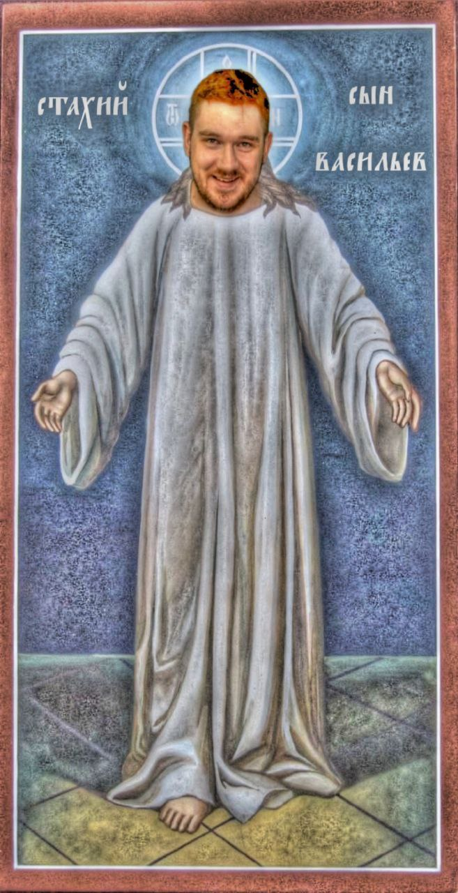

О, братья и сёстры! Сия страница, как град Китеж, скрылась от наших глаз. Быть может, её утаили враги правды, а быть может, промыслом Божиим она исчезла. Мы не можем сказать наверняка, но путь сюда закрыт. Вернитесь на главную страницу, чтобы укрепить дух православный и следовать путём истины.
Во славу Божию